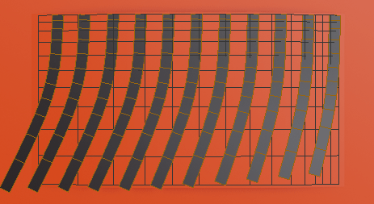
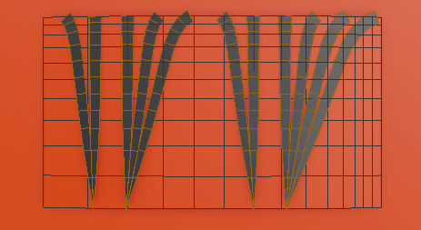

Curve from grid surface¶
It is mostly useful for long hair, eyelashes or layered type of hair. It works by generating curves from grid mesh (made all of quads). Grid mesh topology is guiding hair strands flow.
To use 'Curve from grid surface', you need to:
- have mesh object selected, that is grid type of mesh.
- or you can use it on previously created curve ribbons, to update their shape. For that just select old curve ribbons and run 'Curves from grid surface'
Demo:
Proper grid mesh¶
First step is to generate base shape of hair. For that use grid mesh, created only of quads. Mark one border of this mesh with sharp edges - this area will become roots of hair strands.

Example of proper grid meshes topologies (for actual hair you would want to model this better - following main hair masses and hair flow):
If we UV to those shapes, we would get flat 2D grid:
Generating curves¶

Press 'Curves from grid surface' button located in right UI Sidebar: "Hair Tool" tab -> Hair operators panel (or use ctrl+shif+h popup menu 'Curves from grid surface'), to generate curves from selected object. Generated curve settings can be modified using 'F9' hotkey. You can adjust parameters like hair amount, length, add some noise etc. Or you can manually tweak hair going into curve 'Edit mode'.
Generated hair will have material applied automatically, if you choose to 'generate ribbons' option ('generate ribbons' adds profile to hair curves)
Parameters (F9 Key)¶
Generation Method - Edge Centers or Vertex position
- Hair Type - generate Bezier, Nurbs or Poly curves.
- Radius - curve radius (when not using ribbons)
Strands properties¶
Control basic properties like generated curves amount, number of points per spline etc. You can use topology of grid surface to guide density of generated strands. In places where grid surface have denser loops you can generate more strands or give more points to each strand.
 Strands count - number of strands to generate
Strands count - number of strands to generate
 Uniform Strands - Distribute strands uniformly. If not, then more strands will be placed at denser grid surface areas (in this case - more on right)
Uniform Strands - Distribute strands uniformly. If not, then more strands will be placed at denser grid surface areas (in this case - more on right)
Points per strand - How many points generate for each strand
Uniform Points - Distribute points on strand uniformly. If not, then more points will be placed at denser grid surface areas (in this case - more on top)
Offset to tip - Move spline points more toward tip
Offset to root - Move spline points more toward root
Basic randomization¶
Randomize Spacing - Randomize spacing between strands
Randomize Length - Randomize strands length
Main Noise¶
Gives hair the main flow direction. Noise Amplitude - Noise strength
Seed - noise seed gives different hair flow for each value
 Noise frequency - gives more detail to hair flow. Higher frequency produces smaller detail on hair strands
 Constrain - Constrain noise movement to grid surface
Constrain - Constrain noise movement to grid surface
 Transition Contrast - Contrast between areas with no noise to full noise influence, over strand length
Transition Contrast - Contrast between areas with no noise to full noise influence, over strand length
 Transition Offset - Offset noise influence more toward the root (or tip) of strand
Transition Offset - Offset noise influence more toward the root (or tip) of strand
Per strand noise¶
Helps to break uniform look of Main noise.
Per strand noise - Blend additional noise for each strand to break uniform look
- Mix / Add - add or mix extra strand noise on top of base noise
- Seed - additional noise seed
- Frequency - Per strand noise frequency. Higher frequency produces smaller detail on hair strands
Snap or Uplift¶
Move strands toward or away the source grid surface Offset Above - Offset strands above source grid surface
Snap Amount Snap strands to source grid surface
Ribbons¶
For generating hair texture you may skip this option (curves with bevel depth will be OK for making hair maps). But for making hair cards, you should enable option below.
- Generate Ribbons - Add curve profile ot generated strands
- Strand Width - width of generated curve ribbon
 Align tilt - Align tilt to Surface
Align tilt - Align tilt to Surface
Clumps¶
Gives nice effect especially when you use 'Curves from Grid surface' to generate eyelashes. Clumps - Clump hair together. Higher values produce bigger clumps
 Clumps Seed - Clump different hair strands for each seed value
Clump falloff - Clumping influence over strand length
Clump influence - Blend between no clumping (0) and max clumping effect